Vaison-la-Romaine
Vaison-la-Romaine es el sitio arqueológico más grande de Francia.
Antigua ciudad Celta.
Conquistada por Roma en el año 125 a.e.c.
De época romana destacamos los yacimientos arqueológicos galorromanos,
de Puymin y La Villasse, testigos de la grandeza pasada de la antigua
Vasio Vocontiorum.
- En la colina de Puymin se estableció un barrio de la antigua ciudad
donde destacan la Casa del Laureado Apolo y la Casa de la Tonnelle.
Pertenecían a familias adineradas, como lo demuestra el descubrimiento
de fragmentos de decoraciones, mosaicos, esculturas y una inscripción.
Los restos de tiendas y talleres permiten conocer las diferentes
actividades artesanales de los habitantes. Monumentos públicos como el
Teatro y el Santuario Porticado dan testimonio de la grandeza de la
ciudad.
La
Maison à la Tonnelle ocupa más de 3.000m² repartidos por las laderas de
la colina. Una serie de sótanos, estancias semienterradas y escaleras
debieron de proporcionar conexión entre los niveles. Se abría al cardo
maximus, el eje principal noreste/suroeste, a través de dos entradas. La
entrada al área de trabajo doméstico está bien conservada, mientras que
la entrada principal pudo haber sido creada a partir de una gran
escalera situada bajo el jardín. Esta casa es el resultado de la lenta
evolución de una vivienda rural a una casa adosada. Se organiza en torno
a numerosos patios y jardines. Al noroeste, un patio de servicio con
letrinas y varios asientos, conectaba directamente con la carretera. Su
entrada para carruajes facilitaba el suministro de las zonas de trabajo
y almacenamiento que se extienden por el ala norte, que aún conserva
yeserías pintadas sobre un muro de barro. En el patio se encuentra con
una pila doméstica conectada a la cocina. Esta última se identifica por
la presencia de un horno, un dolium, un fregadero y un elemento de
piedra de molino. Esta zona está atravesada por una alcantarilla. Al
este, al pie de la colina, el complejo termal conserva su zona de
calefacción y su sala caliente. Finalmente, unos metros al norte, una
gran piscina adornaba otro jardín que se extendía exclusivamente
alrededor del teatro.
|
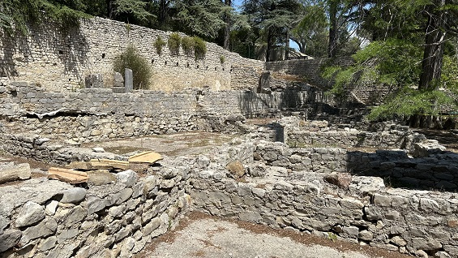 |
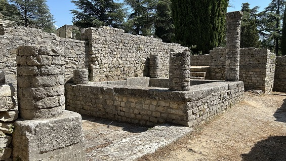 |
|
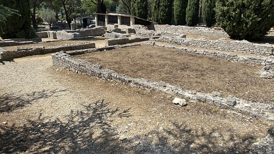 |
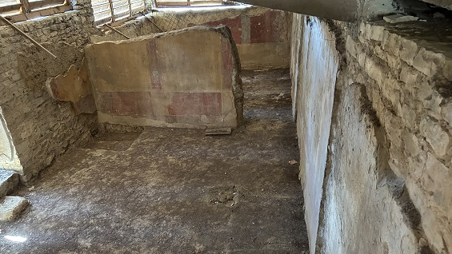 |
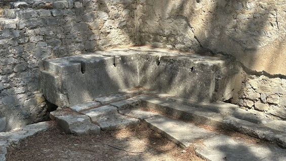
El Teatro romano fue erigido en el siglo I durante el reinado del emperador Claudio. Es uno de los pocos edificios visibles hoy en día que componían la ciudad monumental. Fue restaurado en el siglo III y utilizado hasta el siglo IV. Los historiadores creen que fue parcialmente destruido a principios del siglo V, cuando Honorio decretó que fueran destruidas todas las estatuas de deidades paganas. Posteriormente, los restos del monumento se reutilizaron para sarcófagos o como material de construcción. Tenia una capacidad de unos 6.000.- espectadores. Actualmente todos los años en verano se celebran el Festivales.
|
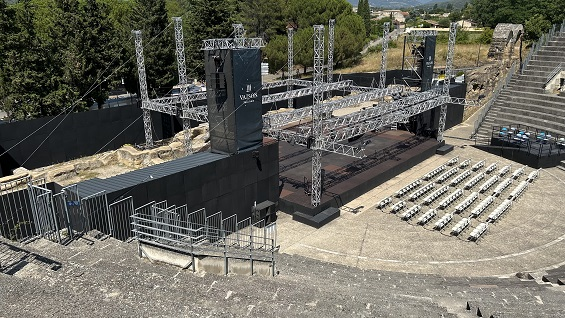 |
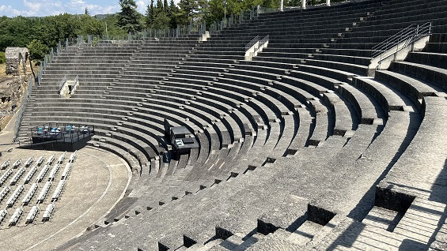 |
La Casa del Laureado Apolo. Esta domus está parcialmente excavada. Esta domus toma su nombre de una cabeza de mármol blanco de Apolo (exhibida en el museo), descubierta aquí en 1925. Carece de la entrada principal, presumiblemente estaría al final de una serie de habitaciones. Las entradas más modestas visibles en la "Calle del Teatro" eran secundarias. De su decoración, se conservan los restos de pinturas murales y el suelo de mosaicos y mármol. Tenia una entrada para carruajes, cocina, letrina, termas, jardín, ...
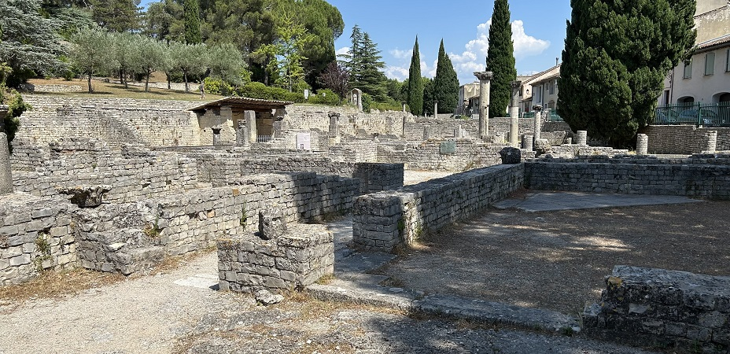
|
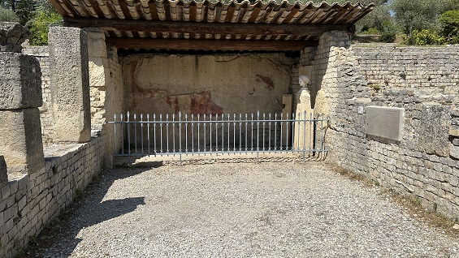 |
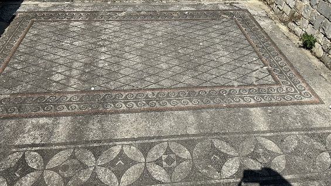 |
-
En La
Villese destacamos la calzada.
Esta amplia vía
es uno de los ejemplos más destacados del urbanismo de Vasio. Se trata
de un cardo secundario rodeado de tiendas, creado entre los años 70 y
100 y utilizado al menos hasta el siglo IV. Tiene 4,2m de ancho y está
pavimentada con grandes losas de piedra caliza. En su lado oeste, las
columnas de un callejón peatonal sostenían un tejado o el alero de la
primera planta de las tiendas, permitiendo a los peatones resguardarse
de la lluvia o el sol.
El este de esta calle estaba adoquinado y más tiendas se extendían hacia
el sur, en dirección al foro.
La
Casa busto se identificó por primera vez como una domus, antes de ser
interpretado como una schola. Las universidades o
gremios eran asociaciones que reunían a personas que compartían la misma
profesión o religión. Sus miembros se reunían regularmente para
banquetes y ceremonias. El descubrimiento de una gran colección de
altares votivos, Boulptures y retratos llevó a los científicos a revisar
su interpretación.
Un busto de plata, así como un retrato imperial descubierto durante la excavación sugiere que se utilizó el espacio
para presentaciones, reuniones, adoración, pero también el tamaño del
edificio y su proximidad del foro es otro argumento para identificar este edificio como una schola.
Las
Termas unos de 2000m2, tiene un diseño similar a otros
baños colectivos en el Imperio.
Parece estar conectado a la schola al este. Se conserva la palestra y la natatio.
La escalera al norte conduce a un patio y varias habitaciones utilizadas
para el baño. Datan del año 10-20.
La
Casa del Delfín data del siglo I a.e.c., aquí se encontraba una vivienda
de 1400m2 con
dependencias agrícolas. Durante el siglo siguiente, a medida que la
ciudad se extendía hasta la llanura, esta granja se integró gradualmente
dentro del tejido urbano. Luego fue ampliado, embellecido y convertido
en un hábitat residencial, con un diseño típico de una domus romana, con un atrio y un peristilo.
A principios del siglo II, cubría un área de 2700m2 y estaba perfectamente integrada dentro del diseño
urbano. Es llamada así por una pequeña estatua de mármol
blanco que representa a Cupido montando un delfín (en el
museo).
|
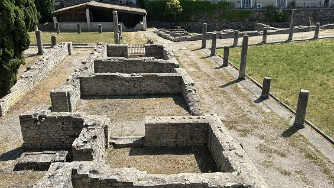 |
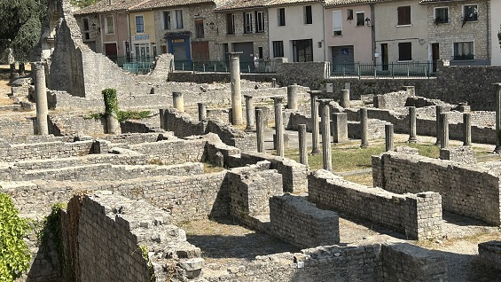 |
 |
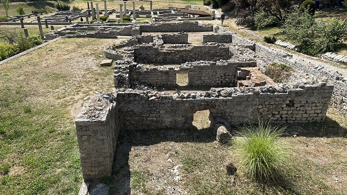 |
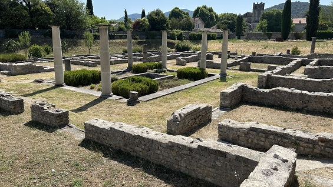
El puente romano, declarado Monumento Histórico en 1840, fue construido en el siglo I, está anclado en la roca en un estrechamiento del río Ouvèze. Destaca su único arco.
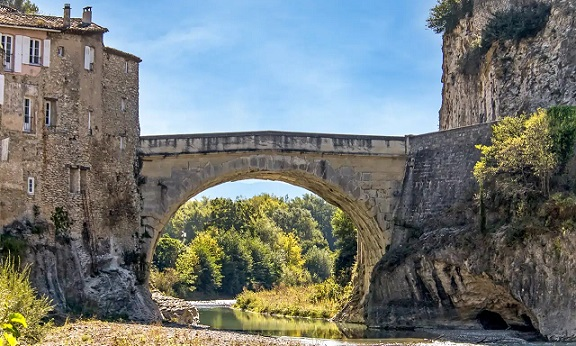
Mas info: https://www.provenceromaine.com/